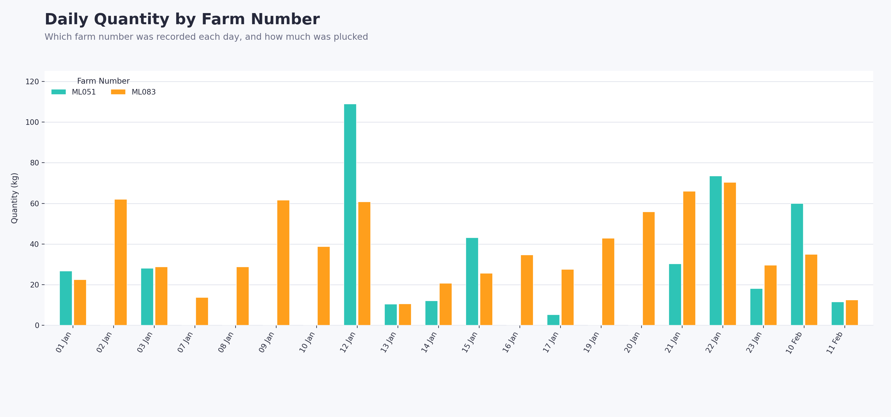

BSc Information Technology graduate with hands-on experience building software applications, managing databases, and delivering IT support to clients. I translate real business problems — from farm record-keeping to billing management — into working software.
A student assessment platform for Our Lady Mercy Community Center — a 30-question computer studies quiz with multiple-choice and short-answer sections, and per-student login. Students did not have to register; they had student-assigned IDs. To navigate further, use demo logins — Full name: demo test, User ID: Demo user.
our-lady-mercy.onrender.comA modern library where I share my perspective on different computer-related concepts.
ca-v2a2.onrender.comA record-keeping app tracking plucking, weeding, pruning, fertilizer, and spraying activities across multiple farms, with private multi-user accounts.
chai-yako.onrender.com
BSc Information Technology graduate with hands-on experience building software applications, managing databases, and delivering IT support to clients. Skilled in translating real-world business problems — from farm record-keeping to billing management — into working systems. Complemented by a creative interest in poetry and literary work, bringing strong analytical thinking and communication skills to every project. Seeking to contribute as an IT professional or software developer on a forward-thinking team.
Windows, Linux, macOS · TCP/IP, DNS, VPNs, router configuration · Troubleshooting and PC assembly, Active Directory, help desk ticketing · AWS, Microsoft Azure, VMware · SQL, MySQL, database administration · Python, Bash, PowerShell · Firewalls, antivirus deployment, patch management · Git
Problem-solving and critical thinking for technical diagnosis · Communication — explaining technical terms to non-technical users · Time management — prioritising multiple support tickets · Team collaboration with network and system administrators · Adaptability — fast learning of new software and infrastructure